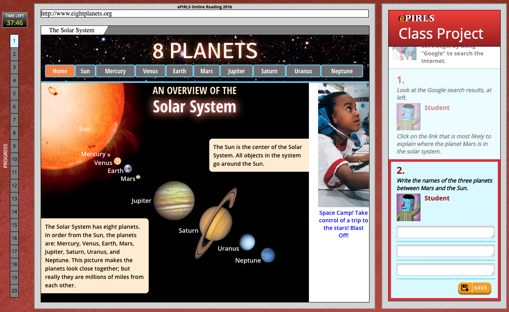

Who Clicks On Advertisements During an Online Reading Assessment?
An Analysis of ePIRLS 2016 Process Data
Yuqi Liao
 Introduction
Introduction
Just like everyone else in the modern society, students around the world are having increasing access to and consumption of online information both in and out of school. How well can students read online? How does their online reading literacy compare in a global context? The international assessment, ePIRLS, was first administered in 2016 to answer that. This innovative assessment of online reading measures how well 4th-grade students around the world read, interpret, and critique information online. The findings have been published and the dataset made available, both of which provide policy makers with information essential to developing appropriate public policies in our age of online information.
While online reading provides new opportunities that offline reading does not, it also presents challenges for readers, one of which is the potential for distractions (Goldstein et al., 2014.). Remember that time when you were reading an article online, where half-way through, there’s an advertisement that caught your eye, and 10 minutes later, you finished purchasing whatever that was and completely forgot about the article? The designers of ePIRLS surely remember such moments, so they put advertisements in many webpages from which students are supposed to read and collect information. The hypothesis is that, students working on school assignments or research projects will finish sooner if they focus on finding critical information and are not distracted (Mullis et al., 2017).
As a digitally based assessment, ePIRLS collects data on the test-taking process, including whether or not students have clicked on those advertisements. This can provide insights into the relationship between students’ performance and their testing behavior. However, little process data research has been conducted on ePIRLS or on other international large-scale assessments for that matter. In this post, I use ePIRLS data to test the hypothesis above, and to explore further about how students around the world read and behave when presented with the distraction of online advertisements.
Data and Methods
Let’s first understand how the ePIRLS assessment works and where the advertisements appear in the assessment.
The ePIRLS 2016 assessment was participated by 4th-grade students in 16 education systems. The assessment consists of five modules of science and social studies topics, with each module lasting up to 40 minutes.
Each participating student took a randomly-assigned combination of two of the five modules. Each module was structured as a class project, and represented in a simulated internet environment that contains advertisements, such as the screenshots shown below which comes from the module "Mars".
The module "Mars" and "Dr. Elizabeth blackwell" (out of five modules) have been released online, so they can be viewed in the same way as they were presented to participating students. Below is a video walk-through (also available online) about the logistics of the assessment.
.ePIRLS recorded information on how many times each student clicks on the advertisements. This information along with student’s online reading performance is used for my analyses. All analyses account for the complex survey design of ePIRLS and use all five plausible values (link to read more about plausible values) of the online reading achievement scale.
Findings
Let’s dive in to the results, which are categorized into 4 research questions below. Click on any question to jump to its section, or scroll down (recommended) to read them all.
- What are students’ advertisement-clicking patterns in each of the five modules?
- What percentage of students clicked on advertisements at least once in the assessment?
- How are students’ advertisement-clicking patterns associated with their online reading achievement?
- How are students’ advertisement-clicking patterns associated with time spent completing the assessment?
Scroll to continue
▼
▼
▼